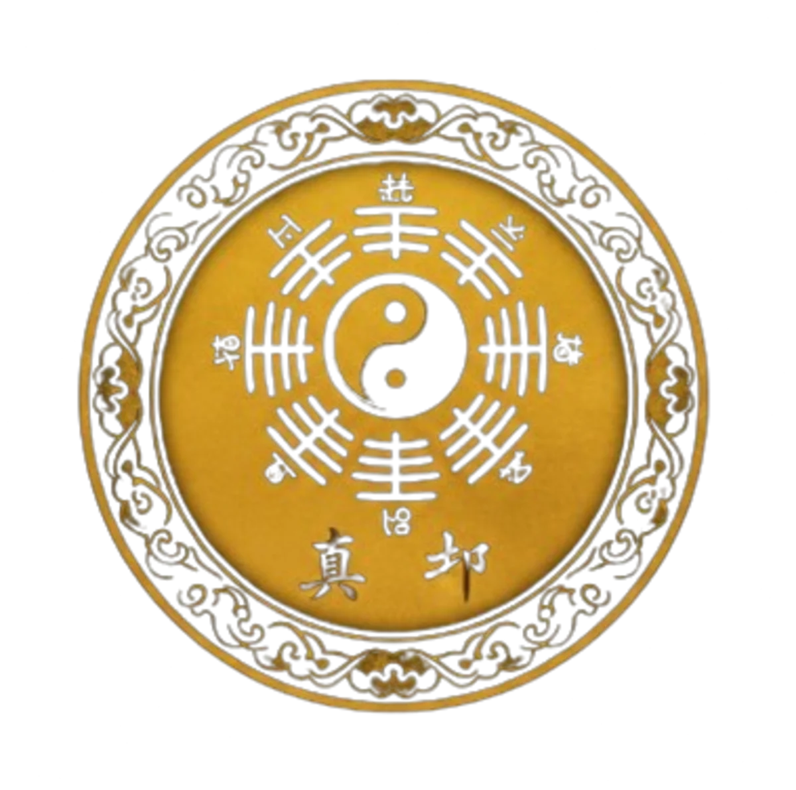

I Ching Digital: Ancient Chinese Divination for the Modern Age
The Book of Changes
The I Ching (易ç»), or Book of Changes, is one of the oldest and most revered texts in human civilization. Originating in China over 3,000 years ago, it began as a system of divination based on 64 hexagrams — six-line symbols composed of solid (yang) and broken (yin) lines — that represent every possible state of change in the universe.
Confucius studied the I Ching so intensely that the leather straps binding his copy broke three times. Carl Jung called it "indispensable for exploring the human unconscious." Generals, philosophers, and emperors have consulted it for millennia. Today, the I Ching is accessible to anyone with a smartphone — and digital interpretation preserves its wisdom while adding convenience.
The Eight Trigrams (Bagua)
Every hexagram is composed of two trigrams (three-line symbols). Mastering the eight trigrams is the foundation of I Ching understanding:
- Qian (☰): Heaven — Creative, strong, enduring
- Kun (☷): Earth — Receptive, yielding, nurturing
- Zhen (☳): Thunder — Arousing, initiating, explosive
- Kan (☵): Water — Dangerous, deep, flowing
- Gen (☶): Mountain — Still, steadfast, resting
- Xun (☴): Wind — Gentle, penetrating, subtle
- Li (☲): Fire — Illuminating, clinging, radiant
- Dui (☱): Lake — Joyful, open, reflective
The Three-Coin Method
The most common method for consulting the I Ching is the three-coin technique, developed during the Han Dynasty (206 BCE – 220 CE). Here is how it works:
- Formulate your question — clear, specific, and sincere. The I Ching responds best to genuine inquiry, not tests.
- Toss three coins simultaneously — six times total, once for each line of the hexagram.
- Record each line: Heads = 3 points, tails = 2 points. A total of 6-8 is a yin (broken) line; 7-9 is a yang (solid) line. Totals of 6 or 9 are "changing lines" — they transform into their opposite in a second hexagram.
- Build the hexagram from bottom to top. The bottom three lines form the lower trigram; the top three form the upper trigram.
- Consult the text — each hexagram has a judgment, image, and line-by-line interpretation. Changing lines point to the dynamics of your situation and how transformation is unfolding.
Changing Lines and the Transformed Hexagram
If any line totals 6 (old yin) or 9 (old yang), that line is "changing" — it represents an element of the situation in flux. When you change these lines to their opposites, you derive a second hexagram that shows the future direction of the situation.
For example, Hexagram 1 (The Creative) with a changing line in the fifth position might transform into Hexagram 14 (Possession in Great Measure). The first hexagram describes the present; the transformed hexagram shows the potential outcome if you follow the oracle's guidance.
Digital vs. Traditional Casting
Many practitioners ask whether digital I Ching casting is "authentic." The answer lies in intent, not medium. The three-coin method is itself a technological innovation — a simplification of the original yarrow stalk method (which took 30+ minutes per consultation). A well-designed digital app faithfully simulates the coin toss algorithm, eliminates human bias in tracking lines, and preserves the full interpretive text. The oracle speaks through the coincidence of the cast, not through the physical material of the coins.
The I Ching Oracle app by Cha0smagick Labs implements the three-coin method with strict fidelity, includes all 64 hexagrams with complete interpretations, supports changing lines and transformed hexagrams automatically, and offers multilingual support (EN, ES, FR, DE, IT).
Cast the I Ching with precision.
The I Ching Oracle app features the authentic three-coin algorithm, 64 complete hexagrams, reading history, and multilingual support — all offline, one-time purchase.
Get the I Ching Oracle →Try It Free Online
You can cast the I Ching for free online using our HuggingFace-powered tool. Experience the oracle before unlocking the full app features.
Try the Free Online I Ching →
Frequently Asked Questions
How many times can I consult the I Ching in one day?
There is no strict limit, but traditional wisdom suggests one question per session, with genuine reflection between consultations. The oracle rewards depth over frequency.
Do I need to understand Chinese philosophy to use the I Ching?
Not at all. The interpretations included in modern apps provide clear, practical guidance. Over time, many users naturally develop interest in the underlying philosophy.
Can the I Ching predict the future?
The I Ching does not predict fixed outcomes. It illuminates the dynamics of your situation and suggests the most harmonious path forward. The future remains open — the oracle helps you navigate it wisely.